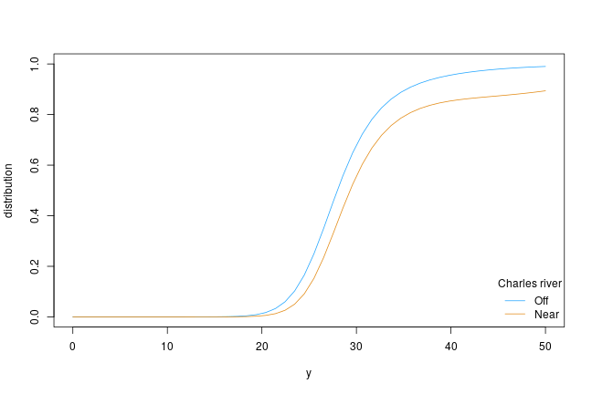

A Simple Transformation Model
First, install and fire-up R on your computer. Within R, one needs to install the tram package by typing
install.packages("tram")
and hitting the ENTER key. The tram package implements simple formula-based interfaces to some important transformation models. The models themself are fitted using algorithms implemented in mlt add-on package.
Once the package is installed, you can load it using
library("tram")
## Loading required package: mlt
## Loading required package: basefun
## Loading required package: variables
Now all tram functions are ready to be used, for example the Colr() function for fitting a series of potentially stratified logistic regression models to a continuous outcome variable (let’s start with median Boston Housing values):
data("BostonHousing2", package = "mlbench")
library("survival")
BostonHousing2$y <- with(BostonHousing2, Surv(cmedv, cmedv < 50))
Colr_BH_1 <- Colr(y | 0 + chas ~ crim + zn + indus + nox +
rm + age + dis + rad + tax + ptratio + b + lstat,
data = BostonHousing2, support = c(10, 50))
summary(Colr_BH_1)
##
## Continuous Outcome Logistic Regression
##
## Call:
## Colr(formula = y | 0 + chas ~ crim + zn + indus + nox + rm +
## age + dis + rad + tax + ptratio + b + lstat, data = BostonHousing2,
## support = c(10, 50))
##
## Coefficients:
## Estimate Std. Error z value Pr(>|z|)
## crim 0.082648 0.013712 6.028 1.66e-09 ***
## zn -0.010274 0.004923 -2.087 0.0369 *
## indus -0.025228 0.021448 -1.176 0.2395
## nox 7.073148 1.491789 4.741 2.12e-06 ***
## rm -1.534726 0.218966 -7.009 2.40e-12 ***
## age 0.008430 0.005118 1.647 0.0996 .
## dis 0.496611 0.077792 6.384 1.73e-10 ***
## rad -0.120764 0.024925 -4.845 1.27e-06 ***
## tax 0.006483 0.001334 4.861 1.17e-06 ***
## ptratio 0.395724 0.048314 8.191 2.22e-16 ***
## b -0.006452 0.001112 -5.803 6.50e-09 ***
## lstat 0.281480 0.026504 10.620 < 2e-16 ***
## ---
## Signif. codes: 0 '***' 0.001 '**' 0.01 '*' 0.05 '.' 0.1 ' ' 1
##
## Log-Likelihood:
## -1297.489 (df = 26)
## Likelihood-ratio Test: Chisq = 879.7637 on 12 degrees of freedom; p = < 2.2e-16
Two separate transformation function are fitted (for houses near and off Charles river, variable chas). The remaining variables enter a linear predictor those coefficients can be interpreted as log-odds ratios. Note that median housing values larger than 50 are correctly treated as being right-censored in the likelihood-
The model can be used to extract the corresponding conditional distribution functions. Let’s put the first house into two locations, near and off Charles river. Then, we compute the two conditional distribution functions:
nd <- BostonHousing2[c(1, 1),]
nd$chas <- sort(unique(BostonHousing2$chas))
library("colorspace")
col <- diverge_hcl(2, h = c(246, 40), c = 96, l = c(65, 90))
plot(as.mlt(Colr_BH_1), newdata = nd, type = "distribution", col = col)
legend("bottomright", legend = c("Off", "Near"), title = "Charles river",
col = col, lty = 1, bty = "n")
 It appears that houses near the river are more expensive, and the variability is also larger compared to houses far away from the river.
The most important feature in this model is that the shape of these distributions have been estimated from data although the models are fully parametric! An introduction to the underlying technology with many more examples is available from the mlt.docreg package vignette.